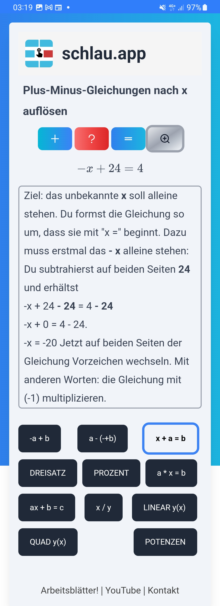

Trainiere das Umstellen. Die wichtigen Techniken sind plus-minus-Umstellen und mal-geteilt-umstellen. Hier fangen wir mit Plus-Minus an, um Gleichungen zu lösen. Ziel des Umstellen ist es, x alleine auf der linken Seite zu haben. Dazu muss die Zahl, die links beim x steht, auf die rechte Seite rübenbeamen. Dabei wechselt sie das Vorzeichen. Das war's schon! (Meistens. Machmal noch Vorzeichen tauschen) Z.B.:
Mach das genau so! Nur: anders als bei dieser Darstellung solltest du sauber bei jedem Schritt die Gleichheitszeichen " = " untereinander schreiben. Noch ein Beispiel:
Der Trick ist so genial, dass niemand von selber draufkommt! Der Trick heißt: Probe machen!
Probe für das erste Ergebnis: Lösung -8 in die Gleichung einsetzen